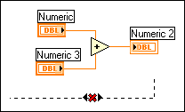

A wire that is not connected to any terminals appears dashed.
To correct this error, use the Wiring tool to click the wire and then click a terminal to attach the wire to the terminal. You also can select the structure or area of the block diagram that contains the broken wire and select Edit»Remove Broken Wires from Selection to delete the broken wire.